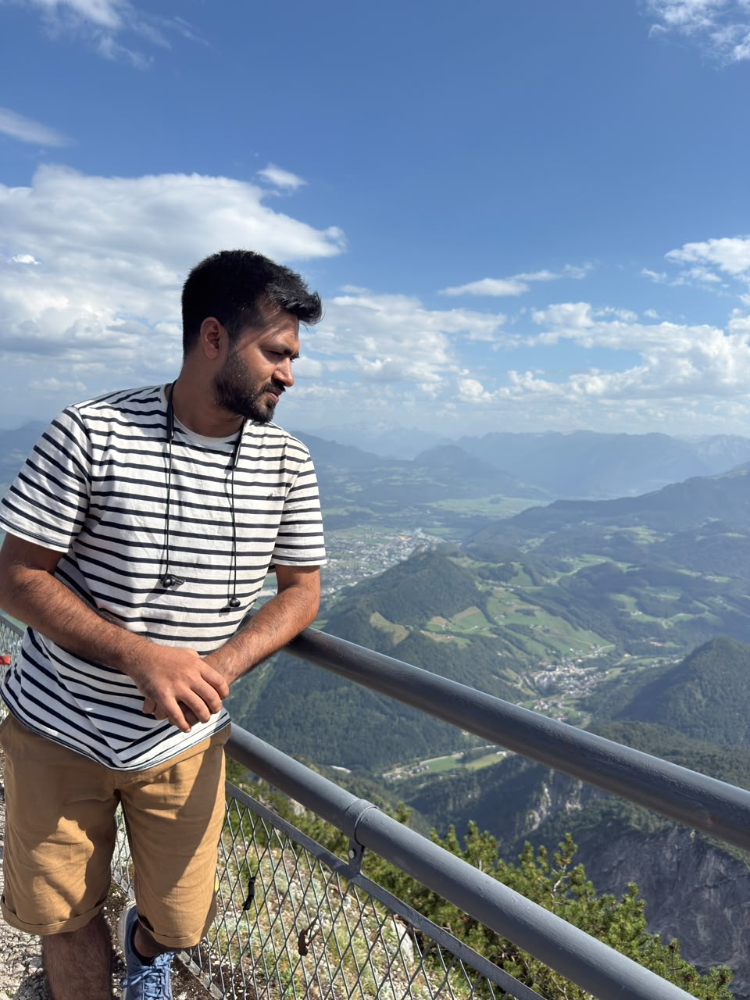
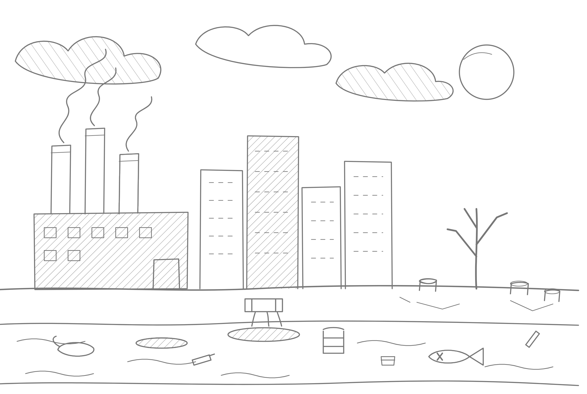

Paris Lodron Universität Salzburg, Austria
I am a geospatial researcher interested in GIS, remote sensing, spatial analysis, GeoAI, machine learning, and environmental risk assessment.


MSc Candidate & Researcher
Applied Geoinformatics
Paris Lodron University of Salzburg
Department of Z_GIS
Salzburg-5020 · Austria
Personal Website
Google Scholar
View Full CV
I am currently pursuing a Master's degree in Applied Geoinformatics at Paris Lodron Universität Salzburg. My academic and professional interests focus on applying geospatial technologies and data-driven methods to understand environmental and disaster-related challenges.
My work combines GIS, remote sensing, spatial analysis, machine learning, and geospatial modelling to support environmental assessment and risk-informed decision making.
Geospatial data analysis, satellite remote sensing, spatial modelling and environmental mapping.
Machine learning and deep learning approaches for geospatial and environmental applications.
Spatial assessment of climate, disaster and environmental risks using GIS-based methods.
GIS-based assessment of flood, cyclone, salinity and erosion risks with vulnerability analysis and multi-criteria decision-making.
Analysis of land surface temperature, urban environmental change and thermal conditions using remote sensing and data-driven approaches.
Spatial assessment of seismic risk and vulnerability using GIS, AHP and geospatial modelling.
Spatial Information Research, 2025.
DOI: 10.1007/s41324-025-00643-y
More publications and research outputs will be added here.
Email: your-email@example.com
GitHub: github.com/Mahdialhasan
LinkedIn: Add your LinkedIn profile
Google Scholar: Add your Google Scholar profile